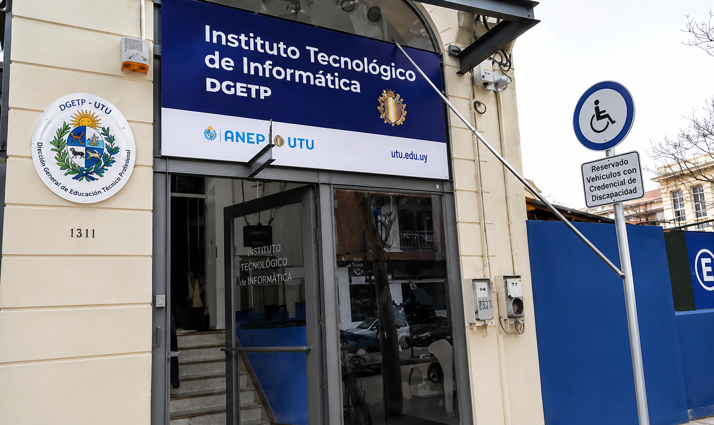

Bienvenido a S.G.R.S.I
El Sistema de Gestión de Recursos y Soporte de Informática (SGRSI) es una intranet desarrollada específicamente para el ITI con el objetivo de centralizar y optimizar la gestión de los recursos tecnológicos y los servicios de soporte informático. Su creación surge de la necesidad de organizar en una única plataforma procesos como el control de inventario, la gestión de préstamos de equipos, el registro y seguimiento de incidencias técnicas, y las solicitudes de servicio. De esta manera, el sistema facilita el trabajo de la Coordinación de Informática, mejora la trazabilidad de los recursos, agiliza la atención de problemas técnicos y proporciona información útil para la toma de decisiones dentro de la institución.
Además, el desarrollo del SGRSI forma parte del proyecto de egreso de la carrera Tecnólogo en Informática, aplicando de forma práctica los conocimientos adquiridos en áreas como análisis de sistemas, bases de datos, desarrollo web, programación y gestión de proyectos. A través de este proyecto se busca diseñar e implementar una solución informática que responda a una necesidad real del ITI, siguiendo metodologías y buenas prácticas utilizadas en el ámbito profesional del desarrollo de software.